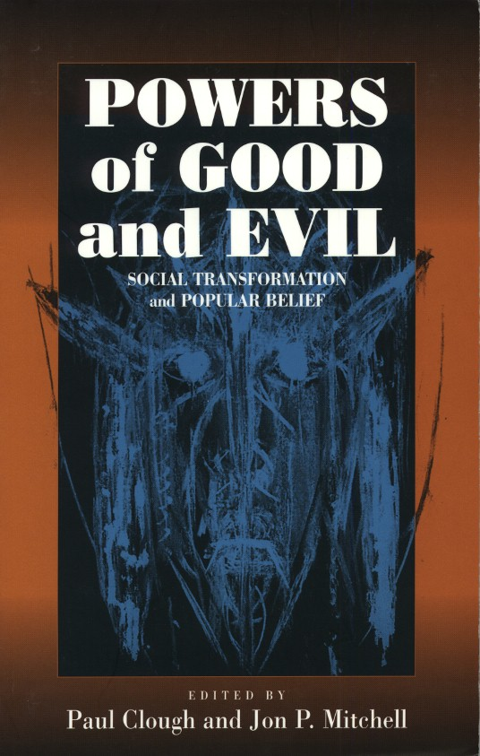

Edited by Paul Clough and Jon P. Mitchell
BERGHAHN BOOKS: 55 John Street, 3rd Floor, New York, NY 10038
Telephone: +1 (212) 2331075 Fax: +1 (212) 7915246
Email: Berghahn@aol.com
3 Newtec Place, Magdalen Road, Oxford, OX4 1RE, UK
Telephone:+44 (o1865)250011 Fax: +44 (01865) 250056
Email: BerghahnUK@aol.com
A key theme in the anthropology of belief is the relationship between socio-economic change and changes in belief systems. It has been widely argued that rapid socio-economic change, particularly the introduction of capitalism, leads to an increase in beliefs and representations of evil and the Devil. These beliefs, it is argued, constitute forms of resistance to or rejection of ÎmodernityÌ. This volume builds on these arguments, to suggest that rather than an indigenous resistance to capitalism, such representations signal a profound moral ambivalence towards the socio-economic processes inherent in capitalist economy. Using a range of examples, from Surinamese zombies to American horror films, it demonstrates the extent to which evil imagery is linked to a fear of excess, particularly in situations where people find themselves, or perceive themselves, to be peripheral to the centres of political, economic and cultural power.
Contents: J. P. Mitchell, Introduction - B. Thoden van Velzen/W. van Wetering, Dangerous Creatures and the Enchantment of Modern Life - P. Geschiere, Witchcraft and New Forms of Wealth: Regional Variations in South and West Cameroon - J. P. Mitchell, The Devil, Satanism and the Evil Eye in Contemporary Malta - B. Meyer, ÎYou Devil, go away from me!Ì Pentecostalist African Christianity and the Powers of Good and Evil - N. Theuma, Modernity, Crisis, and the Rise of Charismatic Catholicism in the Maltese Islands - H. J. Mitchell, Good, Evil and Godhood: Mormon Morality in the Material World - J. Verrips, The State and the Empire of Evil - I. Borg, Religion and its Refractions: Evils and the Devil in Maltese Popular Culture and Religious Art - P. Clough, Conclusions: The Political Economy behind the Powers of Good and Evil.
Autumn 2001 251 pages, bibliog., index
ISBN 1-57181-992-4 hardback; 1-57181 - 313 - 6 paperback
Anthropology/Religious Studies
2 photographs; 7 diagrams
Contents
Introduction
Jon P Mitchell (University of Sussex)
Chapter One: Dangerous Creatures and the Enchantment of Modern Life
Bonno Thoden van Velzen and Ineke van Wetering (University of Amsterdam)
Chapter Two: Witchcraft and New Forms of Wealth: Regional Variations
in South and West Cameroon
Peter Geschiere (University of Leiden)
Chapter Three: The Devil, Satanism and the Evil Eye in Contemporary
Malta
Jon P Mitchell (University of Sussex)
Chapter Four: ÎYou Devil, go away from me!Ì Pentecostalist African Christianity
and the Powers of Good and Evil
Birgit Meyer (University of Amsterdam)
Chapter Five: Modernity, Crisis and the Rise of Charismatic Catholicism
in the Maltese Islands
Nadia Theuma (University of Malta)
Chapter Six: Good, Evil and Godhood: Mormon Morality in the Material
World
Hildi J Mitchell (University of Belfast)
Chapter Seven: The State and the Empire of Evil
Jojada Verrips (University of Amsterdam)
Chapter Eight: The Iconography of Evil in Maltese Art
Isabelle Borg (University of Malta)
Conclusions: The Political Economy behind the Powers of Good and Evil
Paul Clough (University of Malta)